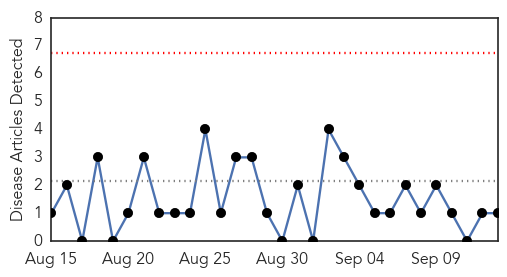

Dengue Fever
30-Day Web Trend
4 alerts, 1 warnings
30-Day Twitter Trend
4 alerts, 0 warnings

Article Locations
Article Confidences

Top Articles:
- 0.998
- Deadly dengue stalks Punjab, 909 cases reported so far
- 0.994
- Casualties in war against dengue
- 0.991
- Dengue cases in India at 5-year high
- 0.991
- Dengue fever cases on the rise in Taiwan, AsiaOne Asia News
- 0.967
- Tainan Enterprises : Blood bank calls for donations as supplies in Tainan running low
- 0.964
- Dengue claims two more lives
- 0.963
- More docs, paramedics to be deployed to tackle dengue
- 0.935
- Delhi hospitals: Patients in corridors, shortage of test kits
- 0.917
- AIIMS turns blind eye to mosquitoes
- 0.893
- Tough steps will be taken to fight Dengue
- 0.876
- Delhi govt to buy 1K new beds for dengue patients; lists tough steps
- 0.864
- SMC's 'dry day' campaign to tackle vector-borne diseases
- 0.861
- Delhi health minister holds emergency meet over dengue
- 0.857
- Delhi's Worst Dengue Outbreak in 5 Years Could Get Worse, Say Doctors
- 0.839
- Delhi Health Minister Satyendra Jain lists tough steps to fight dengue
- 0.836
- Delhi health minister holds emergency meet over dengue
- 0.830
- Papaya leaf juice can cure dengue says Indian Doctor
- 0.828
- Dengue fever takes toll on Taiwan city tourism
- 0.825
- Dengue fever takes toll on Taiwan tourism
- 0.776
- Delhi Health Minister summons all 3 MCD commissioners over rising number of dengue cases
- 0.712
- Parents' suicide jolts AAP government to free up hospital space for dengue patients
- 0.662
- Worst Dengue Outbreak in Delhi in 5 Years, 1259 Cases Recorded
- 0.646
- Delhi health minister summons Municipal Corporation of Delhi commissioners
- 0.646
- Minister reviews Delhi's war on dengue
- 0.644
- Show-cause notice to five hospitals
- 0.628
- Delhi Health Minister calls emergency meeting on dengue
- 0.610
- Delhi government to buy 1,000 new beds for dengue patients
- 0.608
- Govt issues notices to 5 hospitals
- 0.606
- Dengue death: Delhi CM Arvind Kejriwal promises strict actions
- 0.565
- Anti-dengue spray : Principal blamed for fumigation fiasco
- 0.531
- Delhi government orders probe into..., SahilOnline News
- 0.519
- Dengue outbreak prompts plea for blood donations
Top Tweets:
- 0.696
- Flavivirus news: Deadly dengue stalks Punjab, 909 cases reported so far - Hindustan Times: Hind... http://t.co/V4XFHkRSjm pathogenposse
- 0.661
- Flavivirus news: Worst Dengue Outbreak In Delhi In 5 Years - NDTV: NDTVWorst Dengue Outbreak In... http://t.co/ziSf94dfz5 pathogenposse
Pertussis
30-Day Web Trend
0 alerts, 0 warnings

30-Day Twitter Trend
0 alerts, 0 warnings

Article Locations

Article Confidences

Top Articles:
Top Tweets:
-
No tweets found for Sep 13, 2015